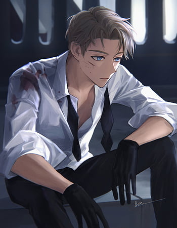

LOID FOGER
Who is the part of the spy x family main cast
and is playing the role of Father
is segretly a spy in disguise
with code name as TWILIGHT
Befitting of a spy,
his true personality is rather cold and methodical,
doing whatever it takes to complete the mission,
from joining terrorist organizations to dating a target's
daughter to becoming a father.

YOR FOGER
Who is the part of the spy x family main cast
and is playing the role of Mother
is segretly a Assasation in disguise
Yor lacks social skills and initially comes across as a
somewhat aloof individual, interacting minimally with her
coworkers and being rather straightforward, described
as robotic by Camilla.

ANYA FOGER
Who is the part of the spy x family main cast
and is playing the role of Daughter
is segretly telepath also the main character
As a young child, Anya is very impressionable
towards the people around her.
For instance, reading Loid's mind
and acting in ways he found very odd
and learning how to punch from Yor.